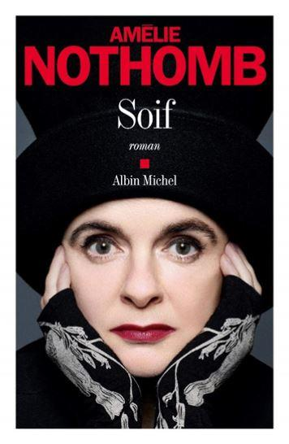
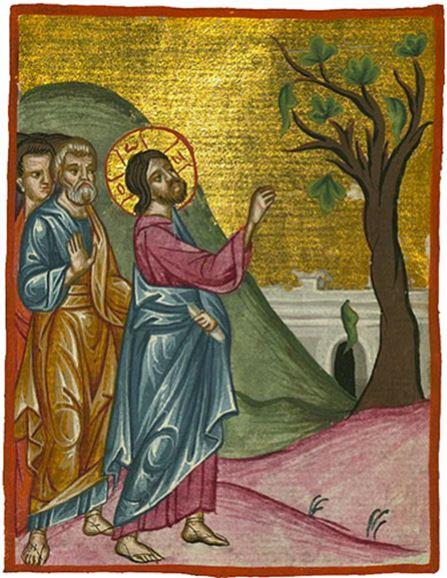
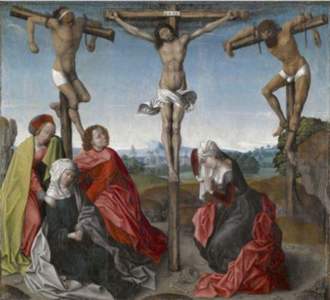

Après avoir publié jadis une « biographie de la faim » Amélie Nothomb vient de faire paraître aux éditions Albin Michel son dernier roman intitulé « Soif ». L’auteur ne publiant jamais de longs romans, c’est comme à l’habitude une narration attrayante avoisinant les 150 pages qui nous est proposée. Ça peut se lire d’un trait, histoire de se désaltérer et d’étancher sa soif, mais il faut y revenir souvent pour apprécier tantôt le fruité, tantôt l’acidité ou tantôt l’âpreté de la boisson.
Ce petit opus est truffé de bonnes surprises, de petites vérités sur lesquelles on n’a peut-être jamais réfléchi, de découvertes sur la puissance du langage. La poésie de Nothomb est un plaisir savoureux :
« …il n’y a pas de limite à ce sentiment de délivrance, la fleur de la mort n’en finit pas d’épanouir sa corolle. » p.120
Dans ce court roman, ô combien surprenant, Nothomb parle à la première personne du singulier ça ne peut donc être, comme dans tous ses romans où elle utilise le « Je », qu’une réussite d’écriture. Ça l’est. Ce n’est pas trahir la trame de dire au lecteur que l’auteur se glisse dans la peau d’un personnage historique, puisque cela est révélé dès la première page.
Et il ne s’agit pas de n’importe quel personnage : c’est dans la peau du Christ que s’incarne la romancière. Amélie Nothomb se prend-t-elle pour Dieu ? Oh que non… Elle se contente de se couler dans le personnage du Fils, ce qui déjà n’est pas rien et elle nous livre quelques pensées que le Christ aurait pu avoir. Le crucifié revit ses dernières heures, de son procès à son exécution.
Bien évidemment l’auteur prend quelques libertés avec les Écritures. Afin de nous livrer quelques-unes de ses réflexions, Le Christ passera une nuit en prison entre son procès et son exécution :
« Je pensais que mon procès serait une parodie de justice. Il l’a été en effet, mais pas comme je l’avais cru. À la place de la formalité vite expédiée que j’avais imaginée, j’ai eu droit au grand jeu. Le procureur n’a rien laissé au hasard. » p.7
Et Nothomb de faire défiler les témoins à charge devant le procureur, ceux qui ne sont pas tout à fait satisfaits des miracles que le Christ a opérés pour eux ou sur eux : l’ancien aveugle se plaint de la laideur du monde, le lépreux guéri à qui plus personne ne donne l’aumône, etc. Certes on pourrait s’arrêter là en criant au blasphème ou au côté Grand guignol du début de la narration, ce que certains n’hésiteront peut-être pas à faire, ce serait un tort que de se priver ainsi d’un bon moment de lecture.
Parfois l’exercice de style est un peu trop poussé, Nothomb écrit page 52 :
« Quand on cesse d’avoir faim, cela s’appelle satiété. Quand on cesse d’être fatigué, cela s’appelle repos. Quand on cesse de souffrir, cela s’appelle réconfort. Cesser d’avoir soif ne s’appelle pas. »
Si, cela s’appelle être désaltéré ou avoir étanché sa soif. Mais l’auteur a raison, la langue française est ici asséchée : il n’existe pas de substantif pour désigner l’arrêt de la soif. Nothomb le sait très bien puisque, prenant le contre-pied du Christ (celui qui boira de l'eau que je lui donnerai n'aura jamais soif - Jean 4-14) elle écrit page 117 :
« L’amour de Dieu, c’est l’eau qui n’étanche jamais. Plus on en boit plus on a soif. Enfin une jouissance qui ne diminue pas le désir. »
Tout au long du chemin de croix, on chemine en compagnie du Christ, plus homme que Dieu.
Un homme presque ordinaire qui bien évidemment connaît le mal, ça coule de source :
« Le mal ne m’est pas étranger. Afin que je puisse l’identifier chez autrui, il était indispensable que j’en sois pourvu. » p.61
Mais cela n’empêche pas, comme pour tout un chacun, que pour cet homme si particulier le mal reste une énigme :
« L’énigme du mal n’est rien comparée à celle de la médiocrité. » p.11
Et cette énigme qu’est le mal, il lui est arrivé, au moins une fois, de lui succomber, de l’accomplir même s’il en montre quelques remords. À propos du figuier que le Christ a desséché (Marc 11)
Le Christ se repend et regrette son geste :
« Comment ai-je pu commettre une injustice pareille ? Ce n’était pas la saison des figues […] frustré de ma gourmandise j’ai laissé mon désir se transformer en colère. » p.31
Ce ne sera d’ailleurs pas la seule colère rapportée par les évangiles, viendra celle des marchands du temple. La colère n’est pas le propre de l’homme, dans l’Olympe elle était un trait de caractère de beaucoup de divinités et dans l’Ancien Testament la colère divine est assez fréquente. Nothomb a donc choisi de nous raconter les pensées humaines de Jésus fait homme, entièrement homme avec ses défauts et ses traits particuliers :
« J’étais homme depuis assez longtemps pour savoir que la joie ne coulait pas de source et que le très bon vin était souvent l’unique moyen de la trouver. » p.24
De ci de là, tout au long de l’ouvrage, pareil à un chapelet, s’égrène une poésie champêtre :
« Le bruit de la pluie exige un toit comme caisse de résonnance : être sous ce toit, c’est la meilleure place pour apprécier le concert. Partition délicieuse, subtilement changeante, rhapsodique sans esbroufe, toute pluie tient de la bénédiction. » p.65
Mais ces images bucoliques sont parfois dépassées par la réflexion métaphysique, elle aussi prégnante et qui fuse tout au long de l’ouvrage :
« Mon père a créé une drôle d’espèce : soit des salauds qui ont des opinions, soit des âmes généreuses qui ne pensent pas. » p.75.
Dans « Soif », il y a peu de mots cérémonieux obligeant le recours au dictionnaire, mais tout de même, le lecteur est ravi de rencontrer le précieux mot de « Pétrichor » (p.120) qui est, entre autres, l’odeur qui s’exhale de la terre et monte vers le ciel après l’averse, cette odeur si charnelle de la terre mouillée…
À propos des deux larrons crucifiés avec le Christ, Nothomb nous donne une leçon de logique que le Christ lui-même n’aurait pas reniée :
« Non, je ne lui ai pas dit qu’il était sauvé. Dire une chose pareille à quelqu’un qui est en train de subir un tel supplice, c’est se moquer du monde. Et dire à l’un des deux crucifiés « tu es sauvé » et pas à l’autre, c’eut été le comble du cynisme et de la mesquinerie. » p.84
La mort bien évidemment occupe la place majeure de l’ouvrage, elle en est le pivot, qu’il s’agisse de la mort du crucifié ou de la mort de façon générale. De la conception philosophique de cette dernière à la perception que peut en ressentir le corps, ou plutôt à l’imaginaire de l’après-corps que s’invente l’esprit, en quelques phrases bien ajustées l’auteur nous invite à une réflexion dépourvue de morbidité sur un sujet qui l’est par excellence :
« Ceux qui crient haut et fort : « faites de mon corps, ce que vous voudrez, je m’en fiche je serai mort, cela m’est égal » n’ont pas beaucoup réfléchi. Ont-ils donc si peu de respect pour la portion de matière qui leur a permis de connaitre la vie pendant tant d’années ? Je n’ai pas de suggestion quant à cette question ; il faut un rite, voilà tout. Et ça tombe bien, il y en a toujours un. Dans mon cas, il a été vite expédié, ce qui est normal quand il s’agit d’un condamné. Une exécution suivie de funérailles nationales, on n’en a jamais vu. » p.132-133
Le corps, la mort et la soif sont la trilogie dominante de cet opus plaisant et osé. Comme les crucifiés meurent d’asphyxie dans une soif atroce, l’auteur à jouer le tiercé gagnant. C’est sur le corps, sur le mystère de ce corps souffrant que s’est construit la religion chrétienne et la civilisation qu’elle a engendrée. C’est donc sur le mystère de ce corps que se trame l’ouvrage :
« Car ce que mon père m’inflige témoigne d’un si profond mépris du corps qu’il en restera toujours quelque chose. » p.91
« Ce qui m’écrase le plus c’est de savoir qu’on va en parler pour les siècles des siècles, et pas pour décrier mon sort. Aucune souffrance humaine ne fera l’objet d’une si colossale glorification. On va me remercier pour ça. On va m’admirer pour ça. On va croire en moi pour ça. » p.106
Que le Christ incarné par Nothomb s’en désole, que le croyant convaincu l’affirme en le complétant d’alléluia ou que l’athée le plus honnête le constate amèrement, cela reste et demeure un des plus grands mystères de tous les temps.
Du bon Nothomb, agréable à lire et qui désaltère l’esprit. J’espère que ma lecture de « Soif » vous en aura mis l’eau à la bouche…
Partager cette page